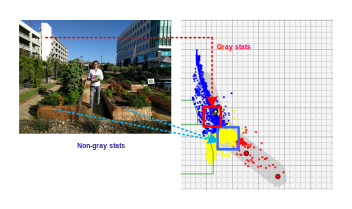
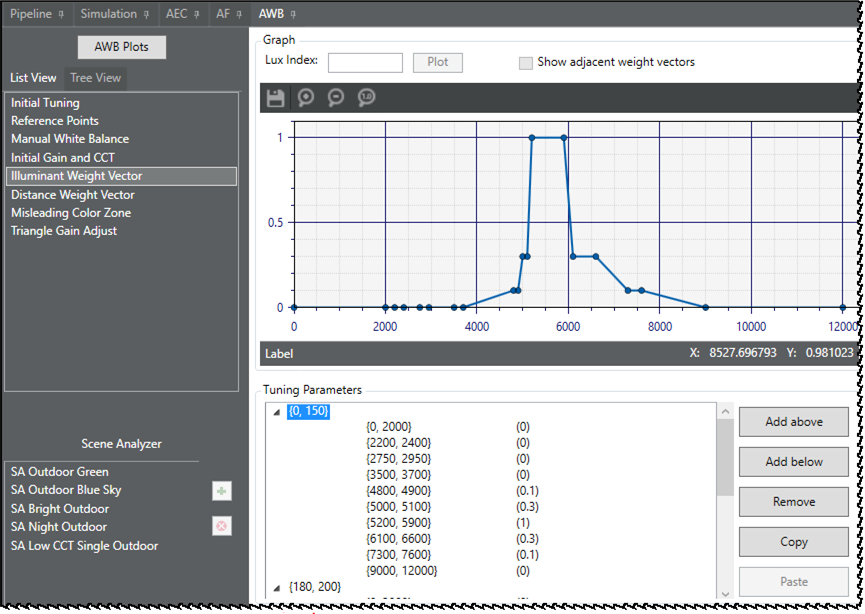
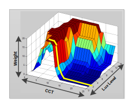

| AWB stats filters | |
AWB processing estimates illuminant sources by an average of gray stat locations in the R/G-B/G space; this estimation is based on gray-world assumption. Therefore, it is very important to select real gray stats in the given input stats. In versatile environments, the average of gray stats can be contaminated by nongray stats located inside the gray zone Therefore, the precise estimation relies on how efficiently you select the gray stats as well as remove nongray stats.
The selection or removal of stats is improved by putting more weight on some stats or less weight on other stats so that the weighted stat average can better estimate the illumination, as shown in the following image comparison.
The weight of a given stat is a probability of the stat; it represents how
likely this given stat is a gray stat or not. This concept is based on observations that
some stats are highly likely the gray stat, whereas, others less likely the gray stat
under different illumination conditions. For example, under daylight condition, if stats
are located around daylight reference points (D75, D65, and D50), they would likely be
real gray stats. However, if stats are located around indoor reference points (A and H),
they would likely be nongray stats.

The illuminant weight vector module computes the average values of weighted stats under different CCTs as well as light condition, which is characterized by the brightness level (lux level). As shown in the above outdoor scene image, it is highly likely that true gray stats are located in high CCT regions, for example, ≥5000K, rather than in low CCT regions, for example, ≤4000K. Therefore, in an outdoor scene, put more weight on stats in the high CCT regions rather than in the low CCT regions. As expected, the weight assignment is opposite for an indoor scene; lower weights for high CCT regions and higher weights for low CCT regions.
Illuminant weight vectors are configured in a two-level triggering system. As
shown in the following image, the Chromatix tool user interface presents the first
trigger (lux level) and the second trigger (CCT) in the first two columns. The last
column is the core data (weight) for a given lux level and CCT range.

Given a lux index and CCT, the stats filter automatically computes the
corresponding 1-D weight vector with respect to CCT. Each stat has its illuminant
decision and corresponding CCT. From the 1-D weight vector, the final weight is computed
with respect to the CCT of the input stat. The yellow dots on the 3-D image show the
computed weight vector for the given lux level.

The illuminant weight vector module follows the common AWB trigger system that provides for interpolation of weight values that fall outside or between the defined trigger ranges.